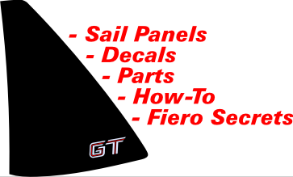

|  |
Welcome to fierosails.com, your source for Fiero sail panels, decals, parts, and key information to keep your Fiero on the road and looking good. |
|
Order Form |
Our Fiero Sail Panels (quarter windows) are: - Virtually identical to originals - For the "notchback" body style only (not '86-88 GT) - For '85-88 only (will fit '84 if later year frames are used) - Available customized for your project (ask us) Our Decals are: - Virtually identical to originals - For any year Fiero - Customized for any vehicle (ask us) Our Parts are: - New: from our overstock or blemished items - Used: from salvage in small quantity; changes often Our Information is: - Fiero-specific (mostly) - Abundant (See Fiero Secrets & Parts Manual) - Priceless! <--- Use the menu at left to find what you need. |